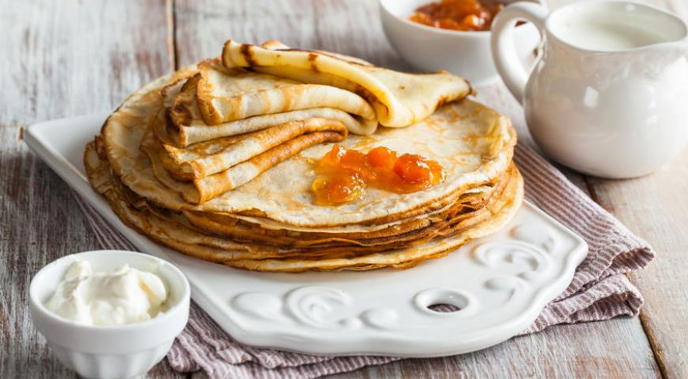
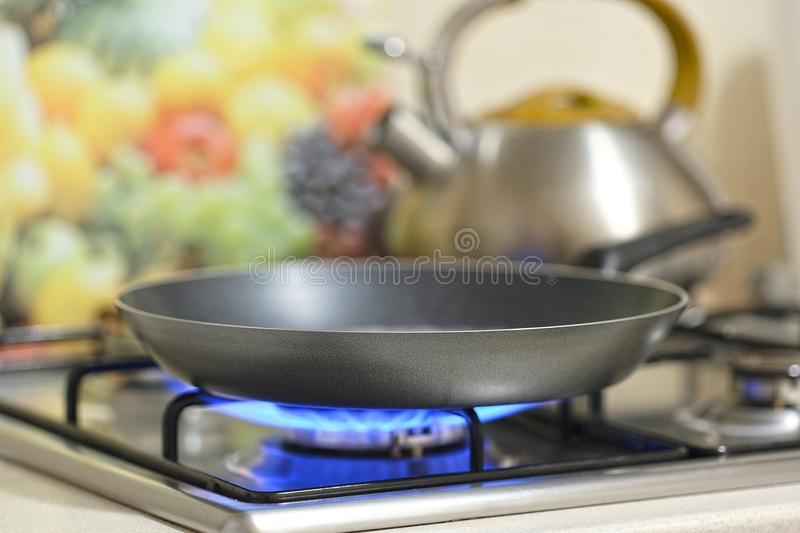
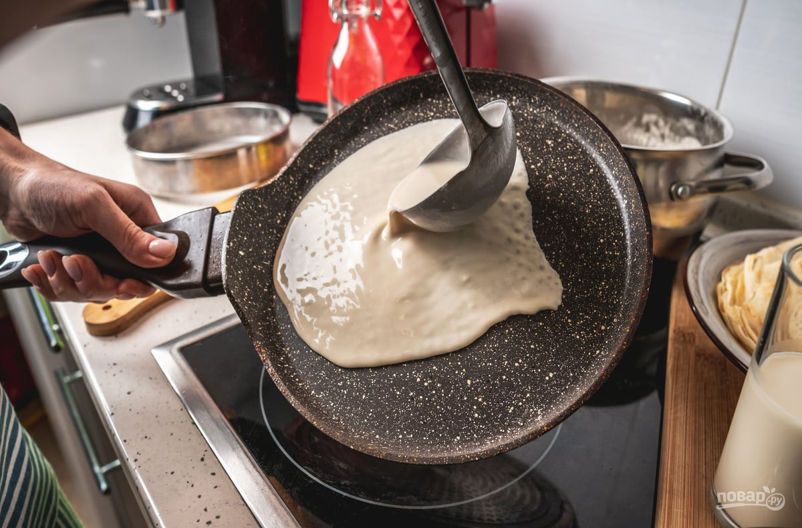

Как сделать блинчики

- нужно мука (Примерно с толстым стаканом)
- нужно молоко (Тоже примерно с толстым стаканом)
- нужно 1 яйцо
Нужно очень хорошо перемишать так чтобы небыло комочков.
Отлично! Тесто Готово
Теперь хорошо нагреваем сковородку и в этом процессе вы должны добавить чуть-чуть масло и промазать его.

После того как разогрели сковородку,
Вы должны вылить тесто на сковородку как на картинке

и в этом процессе нужно добавить масло.
Следом нужно одновременно положить все сырники и готовить до золотистой корочки
Ждем 1-2 минуты
Переворачиваем, и опять готовить до золотистой корочки 1-2 минут...
Выключаем огонь и накрываем крышкой и ждем примерно 5 мин.
Готово!
Сырники готовы!!
Что такое блинчики???
Сы́рники (укр. сирники; от укр. сир — творог), творожники — блюдо белорусской[1], русской[2], украинской[3] и молдавской[4] кухонь в виде обжаренных лепёшек[5] из творога и муки[6].
Особенность рецепта — творог должен быть тщательно отжат и протёрт (например, через сито или в блендере): чем лучше он отжат, тем меньше требуется муки для
получения пластичного теста. В идеале — муки совсем чуть-чуть. Сырники совсем без муки, тем не менее, панируются и готовятся во фритюре.
Наиболее популярны простые сырники и сырники с изюмом, но распространены сырники и с другими добавками, например морковь, курага, яблоко, груша, орехи,
картофель. В редких случаях — зелёный лук или укроп.
Сырники едят со сметанным или фруктовым соусом на основе фруктовых сиропа, пюре или мармелада[6].
Слово «сыр» на большинстве славянских языков обозначает различные виды кисломолочных продуктов, включая творог, но в русском языке рано перестало
употребляться в последнем значении. Название «сырники» является в нём украинизмом, вытеснившим этимологическое «творожники»[7], см. «сир».
Факты о блинчиках
1.Лучше всего не покупать кисломолочный творог
2.Чтобы были вкуснее сырники, можно добавить изюм (и это самое лекгое добавление и изюм нужно добовлять в миску где и само тесто)
3.Сырники едят со сгущенкой,вареньем,сметаной,медом и тд.
4.Если вам лень готовить сырники то можно купить во вкусвилле они очень вкусные:)
Другие рецепты
Как сделать сырники